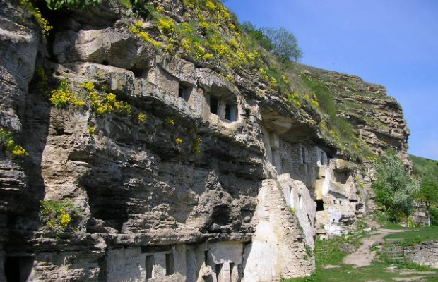
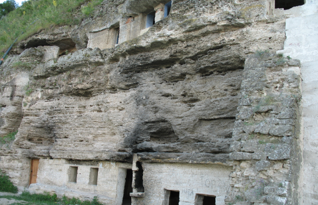

Pensiunea turistică “Hanul lui Hanganu”
Situată la 100 de km de capitală, în satul Lalova, în apropierea a două dintre cele mai vizitate zone turistice ale Moldovei - Tâpova și Saharna, pensiunea rurală “Hanul lui Hanganu” pare a fi soluția perfectă atunci când vrei să uiți de toate grijile și problemele de zi cu zi!

Cele șapte odăi și două băști, construite și amenajate în stil tradițional moldovenesc, cu lejancă, șemineu și o măsuță mică cu scăunele, ca în “Amintirile” lui Ion Creangă, cu covoare țesute și ulcele din lut, te fac să uiți câți ani ai și să te simți ca în copilărie, când obișnuiai să mergi la bunica și să te lași alintat. Iar meniul vine să completeze tabloul: bucate exclusiv din mâncarea tradițională moldovenească, din produse alimentare proaspete, de casă, procurate de la locuitorii din Lalova - răcitură, plăcințele la cuptor, zeamă de găină și, nu în ultimul rând, mândria hanului – sărmăluțele pitice. Să uiți de diete, să mănânci și să nu te mai saturi! De fapt, complexul e mult mai vast decât atât – o sală polyvalentă de 120 m², o fâneață, 3 terase, parcare, saună, livadă, vie.
Se poate veni aici în orice anotimp, cu familia, cu prietenii sau colegii de serviciu, pentru odihnă sau pentru distracții, de sărbători sau în zile obișnuite. Și posibilitățile de odihnă activă sunt foarte diverse. Gazdele hanului oferă toate cele necesare pentru amatorii de vânătoare și pescuit, iar cei care își doresc puțină aventură pot merge la plimbare cu barca pe Nistru sau în excursie la mănăstirile și cascadele de la Tâpova și Saharna cu sania, cu căruța sau cu barca cu motor. Aici este și unul dintre puținele locuri ideale pentru practicarea parapantismului. În sezonul estival, la dispoziția oaspeților stau livada, via și prisaca. Fructele și mierea proaspată de albine pot fi degustate și, la dorință, procurate direct de la producător. O altă alternativă pentru petrecerea timpului liber ar fi vizitarea atelierului de încondeiat ouă sau participarea la programul ansamblului folcloric local.
Ansamblul monastic ”Ţâpova”
La numai 2 km distanţă de pensiunea turistică "Hanul lui Hanganu" este amplasat probabil cel mai excepţional ansamblu monastic rupestru din republic - Ţâpova. Și e chiar considerat unul din cele mai mari din Europa. Nu e nimic de mirare, întrucât ansamblul este constituit în câteva nivele şi se întinde pe o suprafaţă destul de mare, iar pe timpuri schiturile mănăstirii adunau peste 700 de călugări. Sute de chilii călugărești se află în împrejurimi. Comunitatea călugărească de aici a fost creată cu mult înainte de fondarea Statului feudal moldovenesc. Se consideră că unele chilii au fost săpate în malul stâncos al Nistrului încă în sec. X-XII. Această mănăstire a stat strajă la hotar şi era un semnalizator în cazurile năvălirii barbarilor ce veneau din stepa ucraineană.
Mănăstirea este zidită pe vârful unor stânci abrupte, deschizând o priveliște fermecătoare a luncii fluviului Nistru, fiind situată la 100 m deasupra nivelului apei. De un interes deosebit este biserica "Adormirea Maicii Domnului", care este destul de spațioasă, de tip bazilical, având pereţii tencuiți și calota semisferică boltită imitând cerul. Anul 1776 este recunoscut drept anul prosperării, când mănăstirea începe să se extindă. Biserica rupestră a fost divizată în spaţii mari, separate prin coloane masive, au fost lărgite căile de acces și dispare funcţia primordiala a ei de apărare.
Spiritul special al acestor locuri îl simţi imediat ce ajungi pe terasa Nistrului. Se zice că locurile de aici au o energetică benefică și de aceste locuri sunt legate și unele legende. Se spune că în această mănăstire domnitorul Moldovei Ștefan cel Mare și Sfânt s-a cununat cu soția sa Maria Voichița. Și că spiritul acesteia, în forma unei doamne în alb, poate fi văzut noaptea. Sau că ar fi al fiicei acesteia – Marușca, ce şi-a găsit aici locul odihnei de veci. Iar chilia ei emană energie ce poate fi simţită prin atingere.
O altă legendă mai veche ne spune că prin aceste locuri, lângă cetatea geto-dacă, și-a petrecut ultimii ani din viață poetul mitologic Orfeu, care a fost înmormântat sub o lespede de piatră la poalele cetății. Cercetătorii afirmă că un astfel de mormânt a fost descoperit în apropiere de Țâpova.